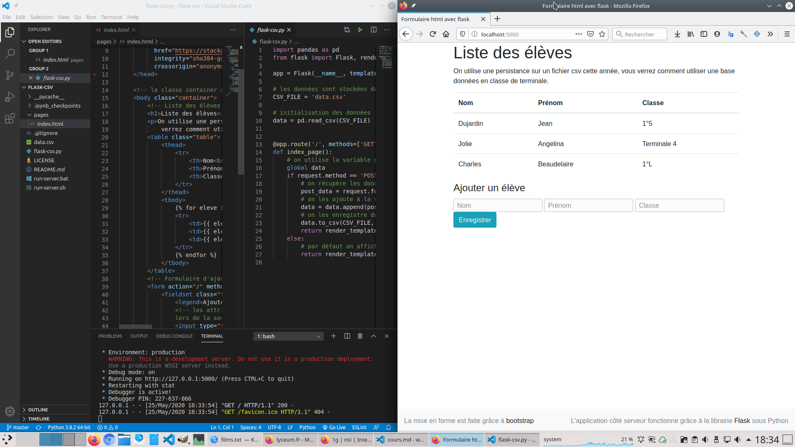

TP sur l’application web serveur en python
Vous allez créer une application web, avec un serveur écrit en python, telle que décrite dans le cours.
Le code est disponible dans ce dépôt framagit au format zip. Téléchargez-le, puis dézippez-le.
Ouvrir le dossier dans Visual Studio Code.
Lancer l’application en tapant dans le terminal de vscode: python flask-csv.py
Vous pourrez alors ouvrir votre navigateur pour observer son fonctionnement à l’adresse locale : http://localhost:5000

L’application présente trois pages accessibles au adresse:
/page racine: affiche la liste des élèves/ajoutajout d’élève avec un formulaire GET./ajout_postajout d’élève avec un formulaire POST.
Vous pourrez parcourir le code, et le modifier:
côté serveur : fichier
flask-csv.py(langage serveur :python)Ce fichier contient le code permettant de traiter les trois pages côté serveur.
Par exemple la page racine:
@app.route('/') def index_page(): "Page d'accueil qui liste les élèves." return render_template("index.html", data=g.data)
La première ligne indique le chemin(route) vers la page, ici
/comme on est à la racine.la dernière indique que l’on renvoie la page
index.htmldans laquelle on a fait passer les donnéesdatadu fichiercsv.côté client :
Toutes les pages html se trouvent dans le dossier
pages. fichierpages/index.html(langage clienthtml)
Travail proposé
- Traiter les données avec le formulaire dans la fonction
post_form_pagedu fichierflask_csv.py. - Ajouter coté client des entrées au formulaire pour stocker d’autres informations, par exemple l’âge. Modifier le code côté serveur pour stocker correctement ces nouvelles entrées dans le fichier
csv. - Ajouter une validation du champ âge côté client pour vérifier que l’age est bien supérieur à 14 ans.
- Travailler à la fois du côté du client et du serveur pour proposer à l’utilisateur de supprimer une entrée.